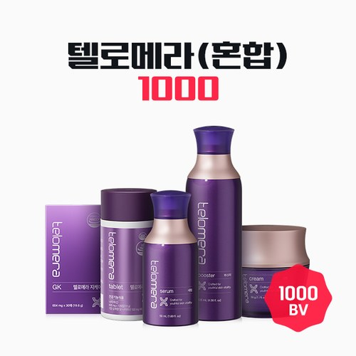

텔로메라 혼합 팩
부스터·세럼·크림 각 3개 + 텔로메라 지케이 6개 + 텔로메라 정 5개
- 회원가입 없이 회원가
- 지쿱 본사 정품 직접 발송
- 5만 원 이상 무료배송
텔로메라 혼합 팩 상세 설명 · 원료와 특징
제품 구성 3개 텔로메라 부스터 바르는 텔로메라 루틴의 시작 피부 시간을 깨우는 리셋 부스터 용량 : 120mL (4.06 fl.oz.) 자세히 보기 텔로메라 세럼 바르는 텔로메라 루틴의 중심 손상된 시간의 틈을 채우는 리페어 세럼 용량 : 50mL (1.69 fl.oz.) 텔로메라 크림 바르는 텔로메라 루틴의 완성 시간의 흔적 지우는 리와인드 크림 용량 : 50g (1.76 fl.oz.) 6개
텔로메라 지케이 먹는 텔로메라 루틴의 시작 하루 한 장으로 채우는 건강 습관 용량 : 656mg X 30매 X 2개입(39.4g) 5개 텔로메라 정 먹는 텔로메라 루틴의 완성 매일 건강해지는 습관의 시작 용량 : 600mg X 120정 (72g) 브랜드 스토리 먹고, 바르다. 세포의 시간을 되돌리다.
노화는 단지 피부 겉에서 시작되지 않습니다.
세포 속 텔로미어가 점점 짧아지면서 진짜 노화는 그때부터 시작됩니다.
텔로메라(Telomera)는 이 근본적인 노화 메커니즘에 주목하여 시간을 되돌리는 리버스 에이징 루틴을 제안합니다.
텔로메라 부스터
먹고, 바르다
세포의 시간 되돌리다
노화는 단지 피부 겉에서 시작되지 않습니다.
세포 속 텔로미어가 점점 짧아지면서 진짜 노화는 그때부터 시작됩니다.
텔로메라(Telomera)는 이 근본적인 노화 메커니즘에 주목하여 시간을 되돌리는 리버스 에이징 루틴을 제안합니다.
두 가지 방식, 하나의 해답 바르는 텔로메라 루틴의 시작 피부 시간을 깨우는 리셋 부스터 텔로메라 부스터 #고기능부스터 #바르는GK #리버스에이징 텔로메라만의 안티에이징 코드 텔로미어 과학에 기반해 피부 시간을 되돌리는 안티에이징 루틴 완성 피부가 처음 만나는 한 방울, 깊이 스며드는 고기능 부스터 텔로미어 활성에 특화된, 다음 단계 흡수 위한 시너지 스타터 산뜻함만 남기고 빠르게 흡수되는 워터 제형
산뜻한 사용감과 빠른 흡수, 매일 부담 없이 시작하는 고기능 부스터 케어 ‘먹는 텔로메라’와 시너지 루틴 구성 동일 성분 기반, 안과 밖을 모두 케어하는 듀얼 안티에이징 NMN × GK Complex™ × 에피탈론 복합 설계로 피부 시간을 되돌리는 안티에이징 루틴 완성 세포 활력과 재생을 위한 안티에이징 핵심 성분 흡수율을 높인 병풀 유래 성분으로 텔로미어 활성 + 피부 진정 케어 에피탈론 노화 유전자 활성에 주목한
핵심 펩타이드 시너지 부스터 4종 (대마, 구실사리, 히알루론산, 아미노산) 텔로미어 보호 & 피부 안티에이징 시너지 케어 * 원료적 특성에 한함 고투콜라(병풀)에서 유래한 단일 유효 복합체 성분으로, 피부 진정을 넘어 텔로미어 손상에 착안한 지쿱만의 안티에이징 기능성 식물 유래 성분입니다.
텔로머레이즈 활성에 관여하여 세포 수명과 노화 속도에 영향을 주는, 텔로미어 기반 과학으로 탄생한 핵심 펩타이드 성분입니다.
엑소좀 × 리포좀 이중 흡수 시스템 엑소좀과 리포좀 기술이 적용된 스마트 흡수 메커니즘으로 유효 성분을 보다 깊고 안정적으로 전달합니다.
엑소좀 리포좀 엑소좀 기술이 적용된 대마추출물이 피부 장벽을 케어하고 피부 컨디션을 정돈 합니다.
더욱 강력해진 리포좀 공법으로 전체 유효 성분을 안정화해, 피부 깊숙이 효과적으로 전달 (고기능 성분 92% 이상 리포좀화 ) * 상기 내용은 제품 효능에 대한 설명이 아닌, 제형 및 기술적 특성에 대한 설명입니다.
피부가 처음 만나는 한 방울, 깊이 스며드는 고기능 부스터 세안 직후, 가장 순수한 피부에 빠르게 흡수되어 다음 단계의 안티에이징 효과를 끌어올립니다.
8종 히알루론산 피부 수분 공급 + 보습 지속력 향상 8종 아미노산 피부 진정 + 수분 장벽 강화 판테놀 피부 진정 강화 + 피부 보습 물처럼 가볍게, 그러나 깊게 끈적임 없이 밀착되는 워터 텍스처, 매일 산뜻한 사용감을 선사합니다
세안 후, 첫 단계에서 2~3방울을 덜어 피부결을 따라 부드럽게 흡수시켜 주세요.
다음 단계 제품의 흡수를 높여줍니다.
피부 시간을 되돌리는 안티에이징 루틴 부스터 세안 후 워터 타입으로 피부결 정돈 세럼 영양 + 광채 집중 케어 크림 고밀도 리프팅 보습으로 탄탄한 마무리 IN & OUT 루틴, 텔로메라로 하루를 채우세요
아침엔 지케이로 가볍게, 저녁엔 정으로 편안하게!
3단계 스킨케어와 함께 하루 루틴을 완성하세요
텔로메라 GK 고농축 유효성분을 담은 빠른 흡수의 필름 타입 텔로메라 정 하루 2번, 1회 2정으로 간편하게 완성하는 정제 타입 이런 분들에게 추천 드립니다
텔로메라 세럼
먹고, 바르다
세포의 시간 되돌리다
노화는 단지 피부 겉에서 시작되지 않습니다.
세포 속 텔로미어가 점점 짧아지면서 진짜 노화는 그때부터 시작됩니다.
텔로메라(Telomera)는 이 근본적인 노화 메커니즘에 주목하여 시간을 되돌리는 리버스 에이징 루틴을 제안합니다.
두 가지 방식, 하나의 해답 바르는 텔로메라 루틴의 중심 손상된 시간의 틈을 채우는 리페어 세럼 텔로메라 세럼 #영양광채세럼 #바르는GK #리버스에이징 텔로메라만의 안티에이징 코드 텔로미어 과학에 기반한 차세대 리버스 안티에이징 설계 영양과 광채를 채우는 고기능 앰플 세럼 유효 성분을 안정적으로 전달해 풍부한 영양과 자연스러운 광채 선사 크림처럼 부드럽고, 세럼처럼 가볍게 스며드는 텍스처 쫀쫀하고 탄력 있는 제형이 피부에 부드럽게 밀착되어 영양과 광채 전달
‘먹는 텔로메라’와 시너지 루틴 구성 동일 성분 기반, 안과 밖을 모두 케어하는 듀얼 안티에이징 NMN × GK Complex™ × 에피탈론 복합 설계로 피부 시간을 되돌리는 안티에이징 루틴 완성 세포 활력과 재생을 위한 안티에이징 핵심 성분 흡수율을 높인 병풀 유래 성분으로 텔로미어 활성 + 피부 진정 케어 에피탈론 노화 유전자 활성에 주목한 핵심 펩타이드 시너지 부스터 4종 (대마, 구실사리, 히알루론산, 아미노산)
텔로미어 보호 & 피부 안티에이징 시너지 케어 * 원료적 특성에 한함 고투콜라(병풀)에서 유래한 단일 유효 복합체 성분으로, 피부 진정을 넘어 텔로미어 손상에 착안한 지쿱만의 안티에이징 기능성 식물 유래 성분입니다.
텔로머레이즈 활성에 관여하여 세포 수명과 노화 속도에 영향을 주는, 텔로미어 기반 과학으로 탄생한 핵심 펩타이드 성분입니다.
엑소좀 × 리포좀 이중 흡수 시스템 엑소좀과 리포좀 기술이 적용된 스마트 흡수 메커니즘으로 유효 성분을 보다 깊고 안정적으로 전달합니다.
엑소좀 리포좀 엑소좀 기술이 적용된 대마추출물이 피부 장벽을 케어하고 피부 컨디션을 정돈 합니다.
더욱 강력해진 리포좀 공법으로 전체 유효 성분을 안정화해, 피부 깊숙이 효과적으로 전달 (고기능 성분 92% 이상 리포좀화 ) * 상기 내용은 제품 효능에 대한 설명이 아닌, 제형 및 기술적 특성에 대한 설명입니다.
영양과 광채를 채우는 고기능 앰플 세럼 피부에 꼭 필요한 성분만을 담아, 풍부한 영양과 자연스러운 광채를 선사합니다.
4중 액티브 포뮬러 8종 히알루론산 피부 수분 공급 + 보습 지속력 향상 8종 아미노산 피부 진정 + 수분 장벽 강화 고함량 알란토인 피부 재생 촉진 + 피부 진정 완화 판테놀 피부 진정 강화 + 피부 보습 크림처럼 부드럽게, 세럼처럼 가볍게 부드럽고 탄력 있는 텍스처로 끈적임 없이 스며들어 피부에 편안한 생기를 채워줍니다.
끈적임 없이 부드럽게 발리며 피부에 산뜻하게 밀착 수분감과 영양감이 동시에 느껴지는 액상 베이스 바르는 순간 피부에 밀착돼 다음 단계 제품 흡수 돕는 베이스 역할까지 부스터 사용 후 본품을 손바닥에 적당량 덜어 얼굴과 목 전체를 고르게 펴 바르고 살짝 두드려 흡수시켜 주세요.
피부 시간을 되돌리는 안티에이징 루틴 부스터 세안 후 워터 타입으로 피부결 정돈 세럼 영양 + 광채 집중 케어 크림 고밀도 리프팅 보습으로 탄탄한 마무리 IN & OUT 루틴, 텔로메라로 하루를 채우세요
아침엔 지케이로 가볍게, 저녁엔 정으로 편안하게!
텔로메라 크림
먹고, 바르다
세포의 시간 되돌리다
노화는 단지 피부 겉에서 시작되지 않습니다.
세포 속 텔로미어가 점점 짧아지면서 진짜 노화는 그때부터 시작됩니다.
텔로메라(Telomera)는 이 근본적인 노화 메커니즘에 주목하여 시간을 되돌리는 리버스 에이징 루틴을 제안합니다.
두 가지 방식, 하나의 해답 바르는 텔로메라 루틴의 완성 시간의 흔적 지우는 리와인드 크림 텔로메라 크림 #고밀도크림 #바르는GK #리버스에이징 텔로메라만의 안티에이징 코드 텔로미어 과학에 기반해 피부 시간을 되돌리는 안티에이징 루틴 완성 피부 속까지 촘촘하게 채우는 기능성 크림 피부에 꼭 필요한 성분 배합으로 피부 밀도와 탄탄한 장벽 케어 빈틈 없이 감싸는 피부 밀착 텍스처 쫀쫀하고 탄력 있는 텍스처가 피부에 부드럽게 밀착되어 영양과 광채 전달
‘먹는 텔로메라’와 시너지 루틴 구성 동일 성분 기반, 안과 밖을 모두 케어하는 듀얼 안티에이징 NMN × GK Complex™ × 에피탈론 복합 설계로 피부 시간을 되돌리는 안티에이징 루틴 완성 세포 활력과 재생을 위한 안티에이징 핵심 성분 흡수율을 높인 병풀 유래 성분으로 텔로미어 활성 + 피부 진정 케어 에피탈론 노화 유전자 활성에 주목한 핵심 펩타이드 시너지 부스터 4종 (대마, 구실사리, 히알루론산, 아미노산)
텔로미어 보호 & 피부 안티에이징 시너지 케어 * 원료적 특성에 한함 고투콜라(병풀)에서 유래한 단일 유효 복합체 성분으로, 피부 진정을 넘어 텔로미어 손상에 착안한 지쿱만의 안티에이징 기능성 식물 유래 성분입니다.
텔로머레이즈 활성에 관여하여 세포 수명과 노화 속도에 영향을 주는, 텔로미어 기반 과학으로 탄생한 핵심 펩타이드 성분입니다.
엑소좀 × 리포좀 이중 흡수 시스템 엑소좀과 리포좀 기술이 적용된 스마트 흡수 메커니즘으로 유효 성분을 보다 깊고 안정적으로 전달합니다.
엑소좀 리포좀 엑소좀 기술이 적용된 대마추출물이 피부 장벽을 케어하고 피부 컨디션을 정돈 합니다.
더욱 강력해진 리포좀 공법으로 전체 유효 성분을 안정화해, 피부 깊숙이 효과적으로 전달 (고기능 성분 92% 이상 리포좀화 ) * 상기 내용은 제품 효능에 대한 설명이 아닌, 제형 및 기술적 특성에 대한 설명입니다.
피부 속까지 촘촘하게 채우는 기능성 크림 피부에 꼭 필요한 성분만을 배합해, 속부터 차오르는 밀도감과 장벽 강화 효과를 동시에 전달합니다.
5중 액티브 포뮬러 15종 복합 펩타이드 탄력 강화 + 피부 밀도 개선 8종 히알루론산 피부 수분 공급 + 보습 지속력 향상 고밀도 세라마이드 보습막 형성 + 피부 장벽 강화 8종 아미노산 피부 진정 + 수분 장벽 강화 고함량 알란토인 피부 재생 촉진 + 피부 진정 완화 빈틈 없이 감싸는 피부 밀착 텍스처 쫀쫀하게 밀착되는 텍스처가 피부에 빈틈없이 밀착되어 하루 종일 촉촉함과 밀도감을 유지해 줍니다.
부스터와 세럼 사용 후, 본품을 손바닥에 적당량 덜어 얼굴과 목 전체를 고르게 펴 바르고 가볍게 두드려 흡수시켜 주세요.
피부 시간을 되돌리는 안티에이징 루틴 부스터 세안 후 워터 타입으로 피부결 정돈 세럼 영양 + 광채 집중 케어 크림 고밀도 리프팅 보습으로 탄탄한 마무리 IN & OUT 루틴, 텔로메라로 하루를 채우세요
아침엔 지케이로 가볍게, 저녁엔 정으로 편안하게!
3단계 스킨케어와 함께 하루 루틴을 완성하세요
텔로메라 지케이
먹고, 바르다
세포의 시간 되돌리다
노화는 단지 피부 겉에서 시작되지 않습니다.
세포 속 텔로미어가 점점 짧아지면서 진짜 노화는 그때부터 시작됩니다.
텔로메라(Telomera)는 이 근본적인 노화 메커니즘에 주목하여 시간을 되돌리는 리버스 에이징 루틴을 제안합니다.
두 가지 방식, 하나의 해답 먹는 텔로메라 루틴의 시작 하루 한 장으로 채우는 건강 습관 텔로메라 지케이 #먹는병풀 #GK #필름제형 #모노화기술 병풀의 새로운 발견 화장품에서 익숙한 병풀, 이제는 식품 원료로!
NMN & GK Complex™ 배합 NMN X GK Complex™로 텔로메라만의 배합 설계 지쿱만의 모노화 기술 적용 병풀 성분 저분자화한 ‘모노 글루코사이드’ 독자 기술 적용 학계와 시장이 주목하는 부원료 5종 함유 엄선한 5가지 부원료까지 더해 텔로메라 레시피 완성 얇고 가벼운 필름, 언제 어디서나 얇고 가벼운 필름 타입으로 물 없이도 바로 섭취 병풀은 바르는 것이라는 생각, 이제는 그 반대입니다
피부 위에만 머물던 병풀을 이제는 먹는 루틴으로 만나세요.
하루 한 장의 필름, 이 작은 습관이 당신의 라이프스타일을 바꿉니다.
건강한 하루를 위한 가장 간편한 방법 텔로메라 GK 화장품 성분으로 잘 알려진 병풀(CICA) 이제는 식품으로 만나보세요
* 본 내용은 원료적 특성에 대한 설명으로, 제품 효능을 의미하지 않습니다.
아시아티코사이드 피부 탄력, 영양 공급 마데카식산 흔적 관리, 생기 부여 아시아틱산 피부 유연, 피부 장벽 강화 마데카소사이드 피부 진정, 콜라겐 합성 촉진 예로부터 상처 치유와 피부 진정에 활용되어 온 허브 식물로 '고투콜라‘, ‘호랑이풀’이라고도 불립니다.
다양한 유효 성분들이 포함돼 있어 많은 화장품에 핵심 성분으로 활용되고 있습니다.
식품 분야 원료로 주목받고 있는 병풀 최근 건강과 노화 관련 학술 연구에서 병풀에 대한 관심이 높아지고 있습니다.
1) 병풀 추출물의 항산화 및 세포 보호 가능성 연구 [출처] Potential Antiaging Effects of DLBS1649, a Centella asiatica Bioactive Extract. (2021) 2) 원료 성분의 활력 유지와 관련된 기초 연구 [출처] A novel nutraceutical formulation increases telomere length and activates telomerase activity In middle aged rats (2023)
3) 피부 세포 건강과 관련된 실험 연구 [출처] Protective effects of Centella asiatica extract against oxidative stress induced cellular senescence in human keratinocytes (2022) * 본 내용은 원료에 대한 학술 연구 사례로 제품 효능을 의미하지 않습니다.
NMN × GK Complex™ 배합 지쿱의 GK Complex™에 NMN을 더해 텔로메라만의 차별화된 포뮬러를 만들었습니다.
건강정보 * 소비자의 이해를 돕기 위한 건강 정보이며 질병 치료 관련 정보가 아닙니다
NMN 이란?
NAD+의 생합성에 관여하는 주요 공급원으로, NAD+는 세포 에너지 생성과 다양한 생리 기능에 꼭 필요하지만 나이가 들수록 점차 감소합니다.
지쿱 본사 제품 상세페이지 내용을 옮겨 정리했어요.
상품정보제공고시
| 제품명 / 제품 코드 | |
|---|---|
| 제품소재 | |
| 색상 | |
| 치수 | |
| 제조년월 | |
| 세탁방법 및 주의사항 | |
| 품질보증기준 | |
| 제조자, 수입품의 경우 수입자를 함께 표기 (병행수입의 경우 병행수입 여부로 대체 가능) | |
| 제조국 | |
| A/S 책임자와 전화번호 |
스페셜팩·세트 다른 제품
배송·교환·반품
지쿱 본사에서 직접 발송해요. 50,000원 이상 주문 시 무료배송, 50,000원 미만은 배송비 2,500원이에요. A/S·교환·반품은 카카오톡으로 문의 주시면 지쿱 본사로 접수해 드려요.